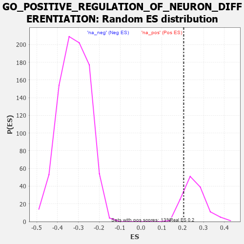

| | | Dataset | 7d |
| Phenotype | NoPhenotypeAvailable |
| Upregulated in class | na_pos |
| GeneSet | GO_POSITIVE_REGULATION_OF_NEURON_DIFFERENTIATION |
| Enrichment Score (ES) | 0.20466183 |
| Normalized Enrichment Score (NES) | 0.8026731 |
| Nominal p-value | 0.84210527 |
| FDR q-value | 0.9140656 |
| FWER p-Value | 1.0 |
Table: GSEA Results Summary
 Fig 1: Enrichment plot: GO_POSITIVE_REGULATION_OF_NEURON_DIFFERENTIATION
Fig 1: Enrichment plot: GO_POSITIVE_REGULATION_OF_NEURON_DIFFERENTIATION
Profile of the Running ES Score & Positions of GeneSet Members on the Rank Ordered List
| PROBE | GENE SYMBOL | GENE_TITLE | RANK IN GENE LIST | RANK METRIC SCORE | RUNNING ES | CORE ENRICHMENT | | 1 | SYT2 | | | 8 | 5.577 | 0.1489 | Yes |
| 2 | HGF | | | 276 | 0.870 | 0.1385 | Yes |
| 3 | SHOX2 | | | 288 | 0.842 | 0.1597 | Yes |
| 4 | RRN3 | | | 438 | 0.667 | 0.1588 | Yes |
| 5 | LRP1 | | | 470 | 0.648 | 0.1723 | Yes |
| 6 | SRF | | | 542 | 0.615 | 0.1798 | Yes |
| 7 | DDX56 | | | 584 | 0.600 | 0.1907 | Yes |
| 8 | FBXW8 | | | 601 | 0.594 | 0.2047 | Yes |
| 9 | SF3A2 | | | 928 | 0.500 | 0.1768 | No |
| 10 | DVL3 | | | 971 | 0.490 | 0.1847 | No |
| 11 | MEF2C | | | 1054 | 0.473 | 0.1870 | No |
| 12 | TIMP2 | | | 1478 | 0.394 | 0.1440 | No |
| 13 | FZD1 | | | 1574 | 0.379 | 0.1421 | No |
| 14 | TRAK1 | | | 1714 | 0.354 | 0.1340 | No |
| 15 | LLPH | | | 1768 | 0.343 | 0.1365 | No |
| 16 | FMR1 | | | 1816 | 0.334 | 0.1396 | No |
| 17 | PAK3 | | | 1889 | 0.322 | 0.1391 | No |
| 18 | ROR1 | | | 1993 | 0.306 | 0.1343 | No |
| 19 | LRRC7 | | | 2080 | 0.294 | 0.1312 | No |
| 20 | BMP7 | | | 2107 | 0.290 | 0.1357 | No |
| 21 | ISLR2 | | | 2124 | 0.287 | 0.1414 | No |
| 22 | REST | | | 2308 | 0.259 | 0.1252 | No |
| 23 | SIN3A | | | 2361 | 0.251 | 0.1254 | No |
| 24 | KDM1A | | | 2447 | 0.237 | 0.1210 | No |
| 25 | DSCAM | | | 2689 | 0.200 | 0.0958 | No |
| 26 | SLIT2 | | | 2724 | 0.195 | 0.0967 | No |
| 27 | ZC4H2 | | | 2907 | 0.164 | 0.0781 | No |
| 28 | FEZ1 | | | 3055 | 0.142 | 0.0633 | No |
| 29 | TWF1 | | | 3199 | 0.123 | 0.0485 | No |
| 30 | FES | | | 3501 | 0.077 | 0.0124 | No |
| 31 | STK25 | | | 3602 | 0.059 | 0.0013 | No |
| 32 | ROBO2 | | | 4066 | -0.018 | -0.0568 | No |
| 33 | MTOR | | | 4114 | -0.025 | -0.0621 | No |
| 34 | SYT17 | | | 4310 | -0.061 | -0.0852 | No |
| 35 | OPA1 | | | 4330 | -0.065 | -0.0858 | No |
| 36 | FIG4 | | | 4348 | -0.068 | -0.0862 | No |
| 37 | MOB2 | | | 4504 | -0.095 | -0.1032 | No |
| 38 | ILK | | | 4510 | -0.096 | -0.1013 | No |
| 39 | NPTN | | | 4519 | -0.098 | -0.0997 | No |
| 40 | NTRK2 | | | 4543 | -0.104 | -0.0998 | No |
| 41 | SYT4 | | | 4590 | -0.116 | -0.1025 | No |
| 42 | ATOH1 | | | 4615 | -0.121 | -0.1023 | No |
| 43 | DLG5 | | | 4619 | -0.121 | -0.0994 | No |
| 44 | RAB21 | | | 4620 | -0.122 | -0.0961 | No |
| 45 | LIMK1 | | | 4684 | -0.136 | -0.1005 | No |
| 46 | PTK7 | | | 4687 | -0.136 | -0.0971 | No |
| 47 | MARK2 | | | 4899 | -0.177 | -0.1190 | No |
| 48 | FZD4 | | | 4940 | -0.186 | -0.1191 | No |
| 49 | EP300 | | | 4941 | -0.186 | -0.1141 | No |
| 50 | ITSN1 | | | 5094 | -0.222 | -0.1274 | No |
| 51 | PTEN | | | 5262 | -0.261 | -0.1415 | No |
| 52 | RIMS2 | | | 5272 | -0.265 | -0.1355 | No |
| 53 | EPHA4 | | | 5273 | -0.265 | -0.1284 | No |
| 54 | MAGI2 | | | 5295 | -0.269 | -0.1238 | No |
| 55 | CPNE9 | | | 5374 | -0.289 | -0.1259 | No |
| 56 | DLG4 | | | 5388 | -0.293 | -0.1197 | No |
| 57 | CUX1 | | | 5437 | -0.304 | -0.1176 | No |
| 58 | IST1 | | | 5442 | -0.305 | -0.1099 | No |
| 59 | FGFR1 | | | 5543 | -0.332 | -0.1137 | No |
| 60 | ROR2 | | | 5626 | -0.353 | -0.1146 | No |
| 61 | VAMP7 | | | 5777 | -0.399 | -0.1229 | No |
| 62 | TRPC6 | | | 5784 | -0.401 | -0.1129 | No |
| 63 | VLDLR | | | 5898 | -0.434 | -0.1155 | No |
| 64 | STK11 | | | 5922 | -0.443 | -0.1065 | No |
| 65 | DBNL | | | 6084 | -0.501 | -0.1135 | No |
| 66 | FEZF2 | | | 6150 | -0.519 | -0.1077 | No |
| 67 | CDON | | | 6378 | -0.607 | -0.1202 | No |
| 68 | CDKL3 | | | 6401 | -0.618 | -0.1064 | No |
| 69 | PTPRD | | | 6423 | -0.629 | -0.0921 | No |
| 70 | ROBO1 | | | 6577 | -0.699 | -0.0927 | No |
| 71 | ARF1 | | | 6583 | -0.701 | -0.0745 | No |
| 72 | PAK1 | | | 6691 | -0.757 | -0.0677 | No |
| 73 | LRP8 | | | 6931 | -0.889 | -0.0741 | No |
| 74 | SNX3 | | | 6934 | -0.893 | -0.0504 | No |
| 75 | DNM1L | | | 6963 | -0.913 | -0.0294 | No |
| 76 | CPNE5 | | | 7070 | -0.977 | -0.0166 | No |
| 77 | SYT1 | | | 7148 | -1.033 | 0.0014 | No |
| 78 | GRN | | | 7319 | -1.194 | 0.0120 | No |
| 79 | FYN | | | 7881 | -2.622 | 0.0114 | No |
Table: GSEA details [plain text format]

Fig 2: GO_POSITIVE_REGULATION_OF_NEURON_DIFFERENTIATION: Random ES distribution
Gene set null distribution of ES for GO_POSITIVE_REGULATION_OF_NEURON_DIFFERENTIATION